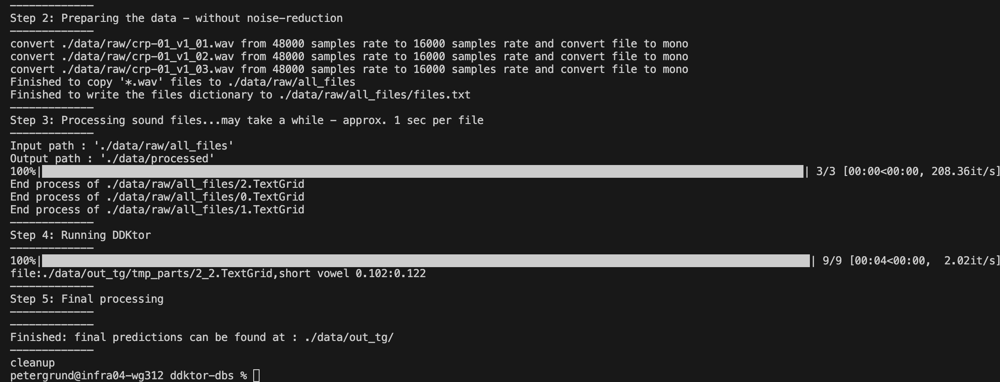

Section 6 DDKtor
Once you have all raw data in ddktor-dbs/data/raw, you are ready to run the DDKtor pipeline.
- Make sure your working directory is
ddktor-dbs. - Run the following commands to check installation and run the pipeline:
chmod +x check_installations.sh./check_installations.sh
- If everything is correctly installed, the terminal will print
All good :) - Run the main shell script:
$ chmod +x ./run_script.sh./run_script.sh- To process with noise reduction, run
./run_script.sh -n
- To process with noise reduction, run
A successful run should look like the following:

If you encounter errors saying that certain packages are missing, install them by typing into the terminal pip install [package] without the brackets.